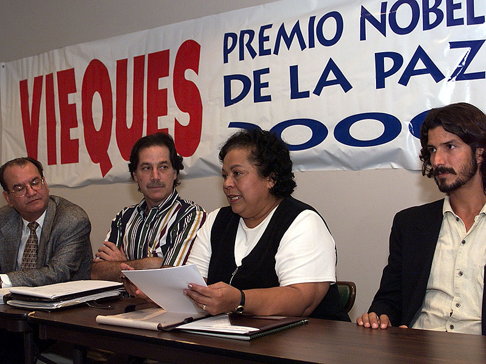
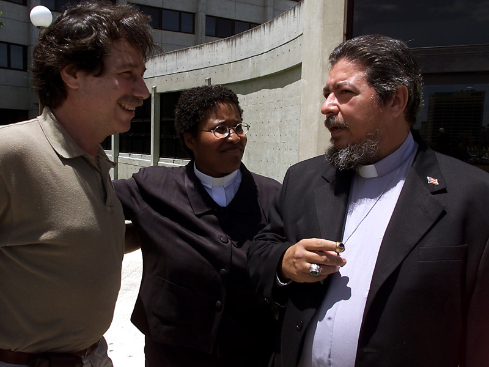
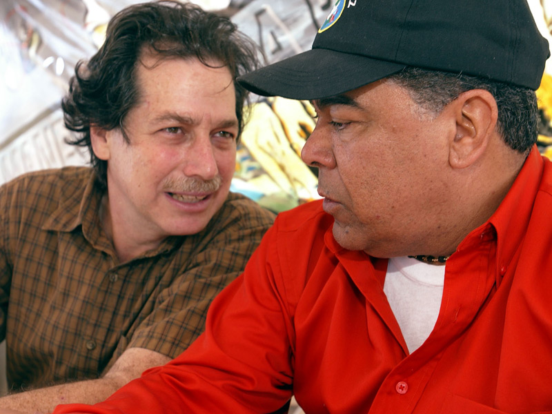
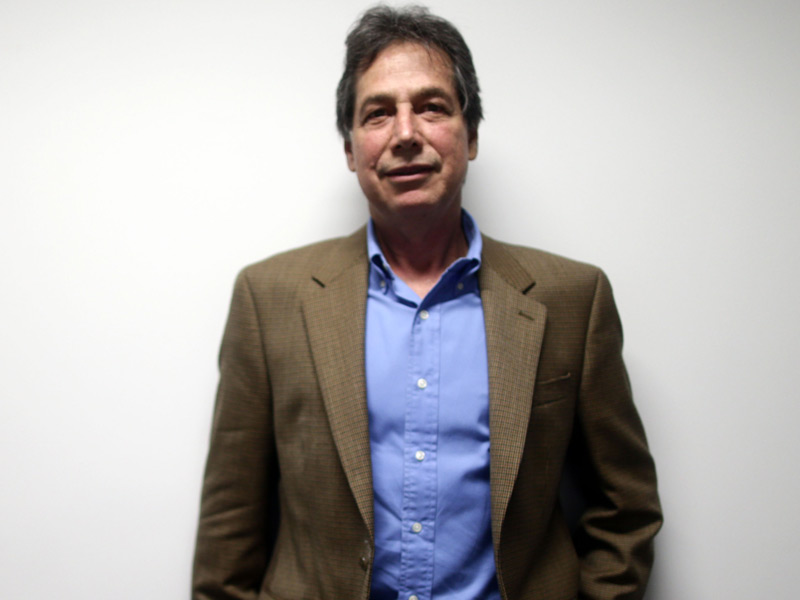

José 'Che' Paralitici (segundo desde la izquierda) fue parte de la iniciativa para nominar a Vieques al Premio Nobel de la Paz 2000. Lo acompañan Enrique Vázquez Quintana, la reverenda Eunice Santana y el licenciado Fermín Arraiza. (Archivo / El Nuevo Día)
Paralitici conversa con los reverendos Margarita Sánchez y Lester McGrath, luego de que fueran hallados culpables en abril de 2001 por penetrar a terrenos restringidos por la Marina. (Archivo / Primera Hora)
José 'Che' Paralitici anunció junto a Danny Rivera el concierto Amanecer por la paz de Vieques el 15 de abril de 2002. (Archivo / El Nuevo Día)
Paralitici conversó con El Nuevo Día a 10 años de que la Marina de Guerra cesara bombardeos en Isla Nena y abriera acceso a gran parte de los terrenos que mantenía cercados. (Xavier Araújo / GFR Media)